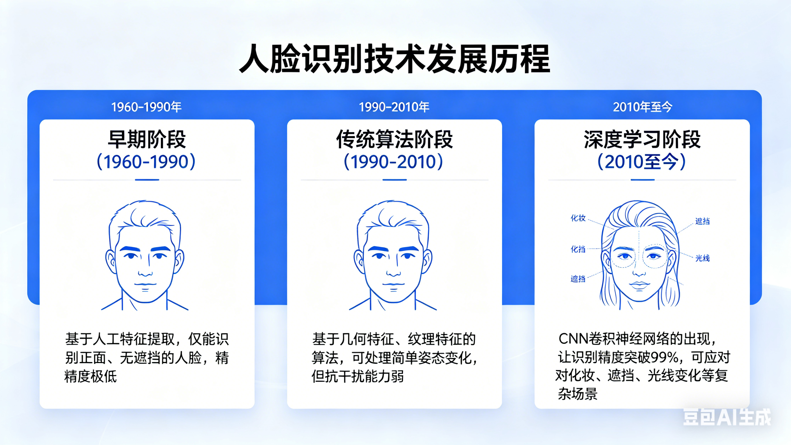
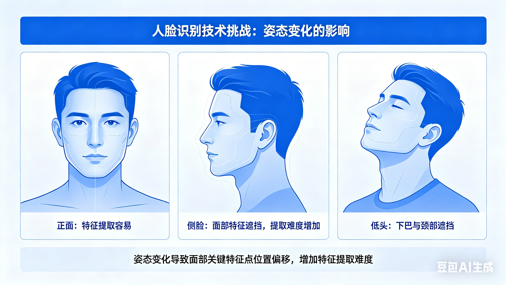
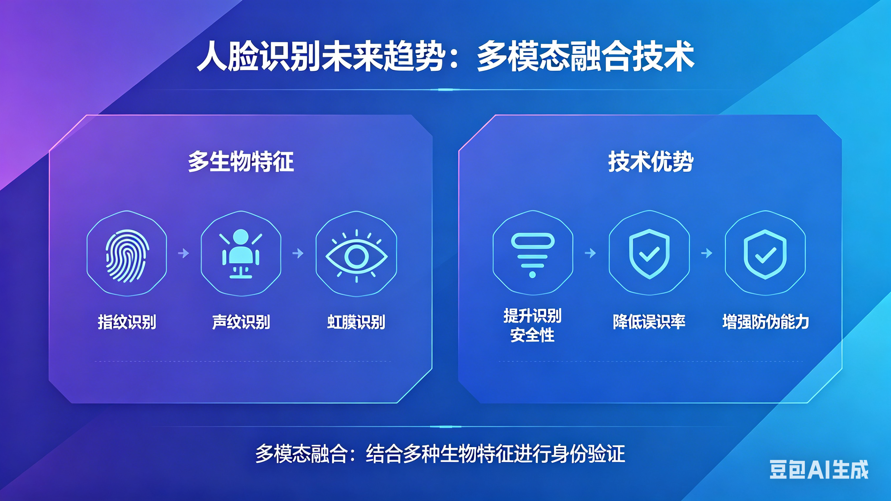
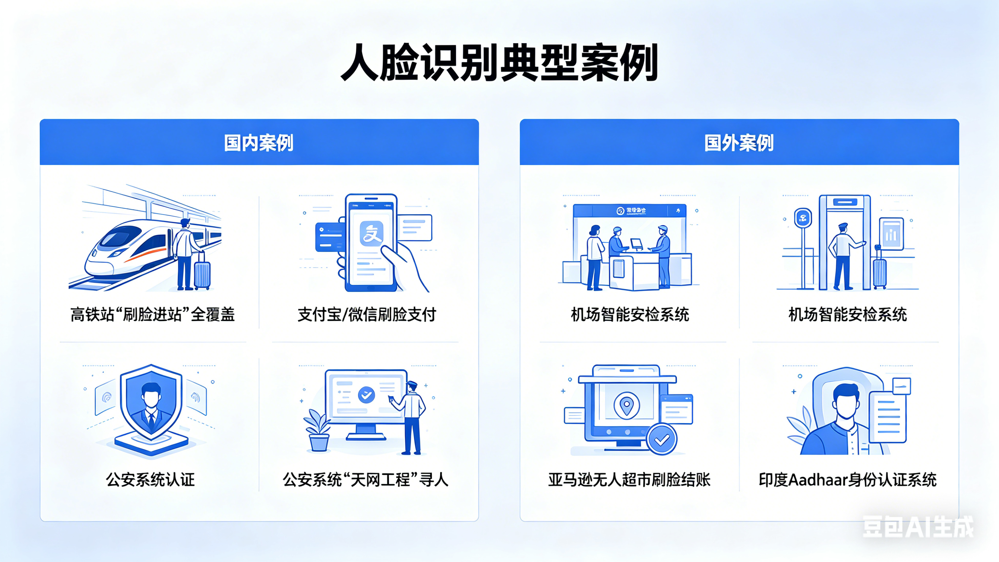

一、人脸识别技术的发展历程

人脸识别技术并非一蹴而就，经历了从早期算法到深度学习的跨越式发展：
- 早期阶段（1960-1990）：基于人工特征提取，仅能识别正面、无遮挡的人脸，精度极低；
- 传统算法阶段（1990-2010）：基于几何特征、纹理特征的算法，可处理简单姿态变化，但抗干扰能力弱；
- 深度学习阶段（2010至今）：CNN卷积神经网络的出现，让识别精度突破99%，可应对化妆、遮挡、光线变化等复杂场景。
二、人脸识别的技术挑战

尽管技术成熟，人脸识别仍面临诸多核心挑战：
- 姿态变化：侧脸、低头、仰头会导致特征提取难度增加；
- 遮挡干扰：口罩、墨镜、帽子等遮挡物会丢失关键特征；
- 光线影响：强光、逆光、暗光环境会降低图像质量；
- 对抗攻击：伪造人脸（如照片、3D面具）可能欺骗识别系统。
三、人脸识别的未来趋势

随着技术迭代，人脸识别将向更智能、更安全、更普惠的方向发展：
- 多模态融合：结合指纹、声纹、虹膜等多生物特征，提升识别安全性；
- 轻量化算法：适配手机、物联网设备等低算力终端，降低使用成本；
- 隐私保护计算：在不获取原始人脸数据的前提下完成识别，从源头保护隐私；
- 跨场景适配：实现跨年龄、跨种族、跨设备的高精度识别。
四、国内外典型应用案例

全球范围内，人脸识别已落地众多标杆性应用：
- 国内：高铁站“刷脸进站”全覆盖、支付宝/微信刷脸支付、公安系统“天网工程”寻人；
- 国外：机场智能安检系统、亚马逊无人超市刷脸结账、印度Aadhaar身份认证系统。